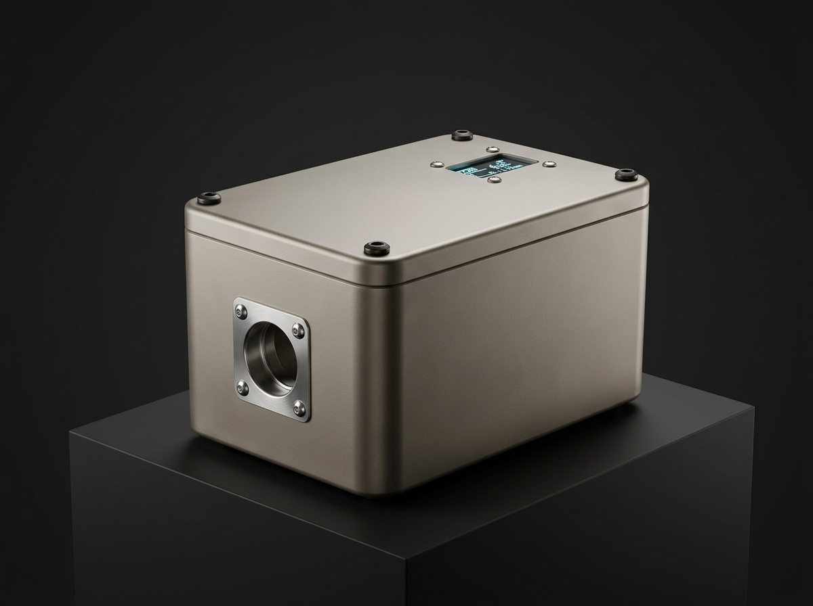
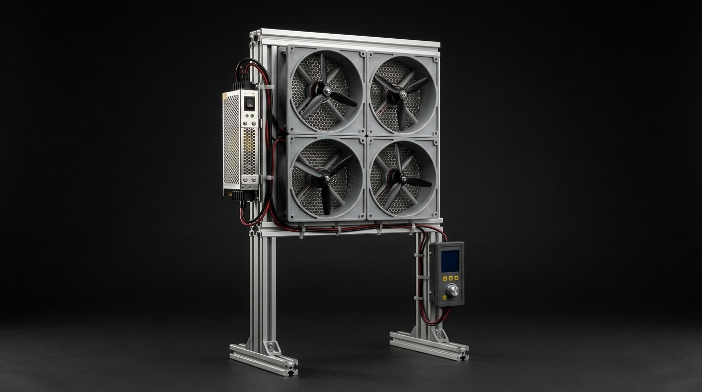
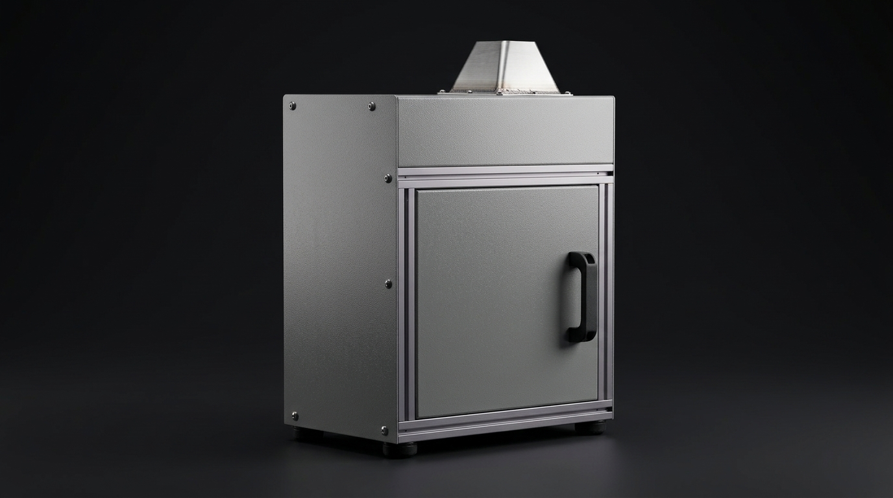
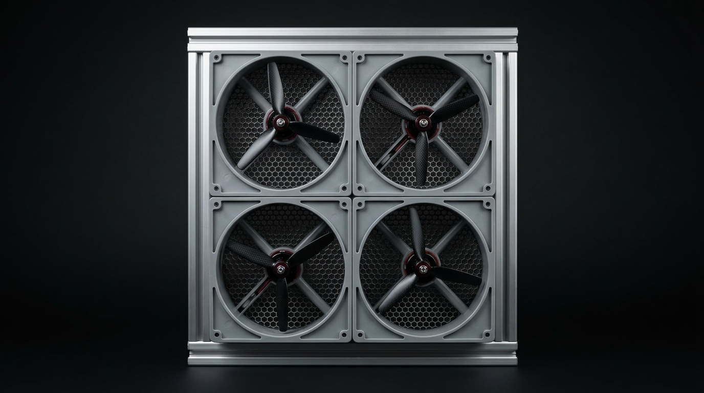

SS316 KESİCİ ÇEKİRDEK
Cerrahi Sınıf Paslanmaz Çelik Rotor
CNC ve lazer hassas işlenmiş 4.0 mm diş aralıklı çok kancalı rotor; korozif ve aşındırıcı teknik polimerleri ısıtmadan soğuk kesimle parçalar.
APH Labs; laboratuvar ölçeğindeki çevikliği, ağır sanayi standartlarındaki mekanik dayanıklılıkla birleştiren özgün mühendislik sistemleri geliştirir. Temassız optik metrolojiden aktif aerodinamik simülasyon dizilerine ve cerrahi sınıf SS316 parçalama çekirdeklerine kadar her platform sıfırdan tasarlanır.
Geleneksel hantal test tesislerinin ve mekanik aşınmaya mahkûm ölçüm cihazlarının aksine, tüm APH Labs sistemleri doğrudan tezgah üstünde veya üretim hattında yüksek tekrarlanabilirlik, düşük akustik profil ve açık dijital kontrol arayüzleri sunacak şekilde optimize edilmiştir.
-20 °C ila +70 °C çalışma sıcaklığı aralığında doğrulanan rijit alüminyum şasiler, gömülü yüksek hızlı DSP algoritmaları ve kapalı çevrim otomasyon desteğiyle fikirden çalışan makineye uçtan uca çözüm sunuyoruz.
Ekstrüzyon hatlarında tek eksenli ölçüm cihazlarının kaçırdığı ovallik ve boğulma hatalarını 90° ortogonal çift eksenli optik mimariyle 1 mikron çözünürlükte yakalıyoruz; sıcak veya karbon elyaf katkılı aşındırıcı filamentlere sıfır fiziksel temasla.
Aerodinamik araştırmalarda ise devasa rüzgar tünellerine ihtiyaç duymadan, Python ve ROS 2 üzerinden milisaniye tepkiyle yönetilen 2×2 aktif fan matrisi ve 3D anti-girdap statorlarıyla laboratuvar masanızda 144 km/s hıza ulaşan doğrusal laminer akış üretiyoruz.

Hassas ekstrüzyon hatları için %100 temassız ortogonal çift eksenli optik ölçüm sistemi. 0.001 mm çözünürlük ve 100 Hz kapalı çevrim takip.
Ürün Sayfasını İncele →
2×2 çoklu fan aktif akış matrisi, 40 m/s laminer hız, çıkış 3D anti-girdap statorları ve Python / ROS 2 dijital kontrol API.
Ürün Sayfasını İncele →
52 RPM / 40 Nm yüksek torklu soğuk kesim, SS316 paslanmaz çelik çekirdek ve < 65 dB ultra sessiz laboratuvar profili.
Ürün Sayfasını İncele →
Platformunuzu seçin, entegrasyon seçeneklerini belirleyin ve doğrudan mühendislik teklifi oluşturun.
Yapılandır & Teklif Al →Her APH Labs makinesi üretime geçmeden önce hassas CNC mekanik işleme, tolerans yığılım kontrolü ve çok eksenli laboratuvar kalibrasyon aşamalarından geçer.
SS316 paslanmaz çelik kesici çekirdekten 90° ortogonal optik gövdeye ve 3D anti-girdap statorlu 2×2 akış dizisine kadar her parça uzun ömürlü sürekli çalışma için üretilir.
CNC ve lazer hassas işlenmiş 4.0 mm diş aralıklı çok kancalı rotor; korozif ve aşındırıcı teknik polimerleri ısıtmadan soğuk kesimle parçalar.
52 RPM düşük devirde 40 Nm sürekli tork üreten indüksiyon tahriki ve yalıtımlı çelik gövde, laboratuvar ortamında konforlu kullanım sunar.

2×2 aktif fan matrisi ve altıgen akış şartlandırma petekleri, pitot kalibrasyonu ve İHA HIL rüzgar testleri için homojen akış oluşturur.
Rijit işlenmiş alüminyum gövde ve dahili OLED ekran ile 100 Hz hızda gerçek X/Y çap ve ovallik takibi.
Endüstriyel makineler için 3D katı modelleme, kinematik mekanizmalar, tolerans yığılım analizi ve DFM/DFA optimizasyonu.
Hesaplamalı akışkanlar dinamiği (CFD), çoklu fan akış matrisi senkronizasyonu, sınır tabaka çalışmaları ve anti-girdap şartlandırma.
Ortogonal çift eksenli ölçüm, sub-mikron kenar algılama algoritmaları, telecentric aydınlatma ve anlık ovallik takibi.
Gerçek zamanlı DSP sinyal işleme, optik sensör sürücüleri ve endüstriyel haberleşme mimarileri (CAN, UART, RS-485, Ethernet).
Gerçek zamanlı hat senkronizasyonu, ekstrüder çekici hızı ve vida devri otomatik PID regülasyonu ve sensör geri besleme döngüleri.
Fikirden çalışan makineye kuruma özel mekanik tasarım, hızlı yinelemeli prototipleme, tezgah üstü laboratuvar cihazları.
Standart laboratuvar platformlarından kuruma özel anahtar teslim otomasyon makinelerine kadar; her toleransı, her akış profilini ve her kontrol döngüsünü birlikte inşa ediyoruz.
Standart platform teklifleri, laboratuvar demoları veya kuruma özel anahtar teslim makine tasarımları için doğrudan bizimle bağlantı kurun.
Mühendislik talebiniz ekibimize iletildi. Teknik parametreleriniz incelenerek bir iş günü içinde size dönüş yapılacaktır.